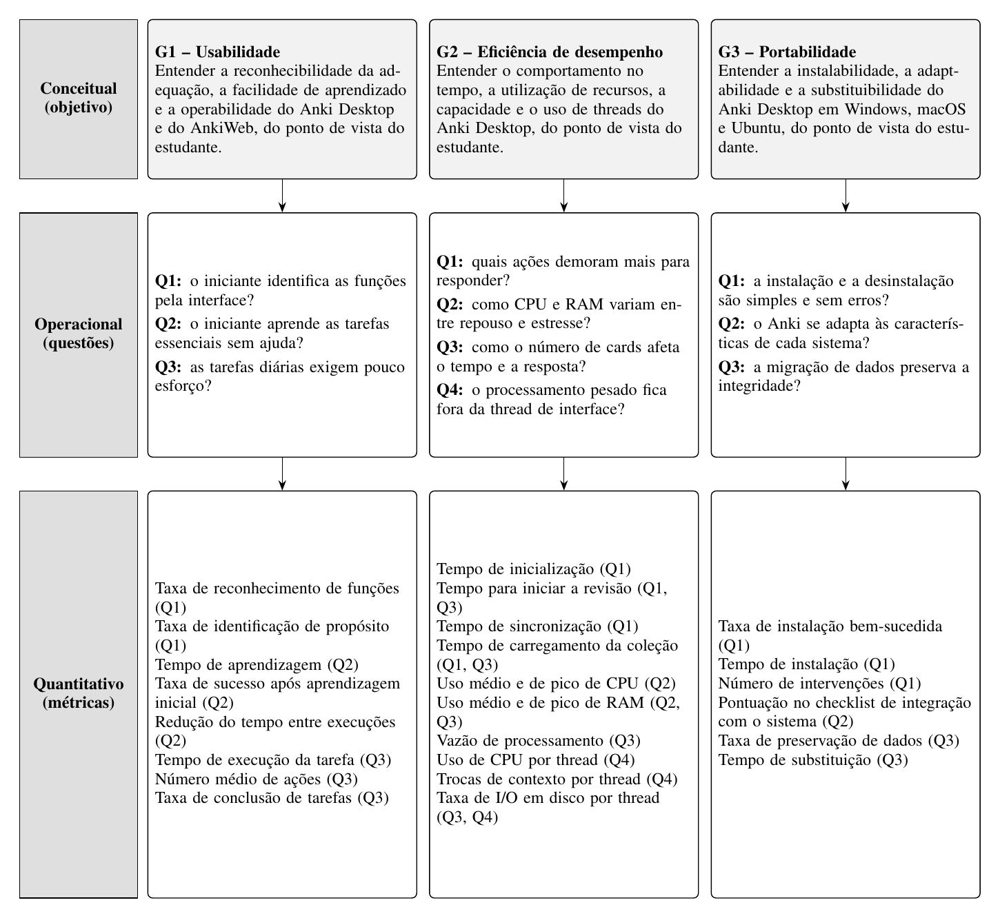

Avaliação da Qualidade do Anki Desktop e do AnkiWeb segundo a ISO/IEC 25010:2011
Bryan Smith Rodrigues Cavalcante, Dante Fernandes Scarpati, Davi Severiano Freitas, Karolina Vieira Barbosa, Mateus de Siqueira Silva e Pedro Henrique Freire Rodrigues
Faculdade de Ciências e Tecnologias em Engenharia (FCTE) / Faculdade UnB Gama (FGA), Universidade de Brasília (UnB), Brasília, DF, Brasil. Disciplina FGA0315 Qualidade de Software 1, Profa. Dra. Cristiane Ramos. Equipe Betty Snyder.
{bryan.cavalcante, dante.scarpati, davi.freitas, karolina.barbosa, mateus.siqueira, pedro.rodrigues}@aluno.unb.br
Versão da Entrega 1 (Fases 1 e 2), 26/10/2026.
Resumo. Este artigo especifica a avaliação da qualidade do Anki Desktop 26.09.3 e do fluxo de conta, login e sincronização do AnkiWeb, com base na ISO/IEC 25010:2011. Na Fase 1, definem-se o requisitante, o propósito de indicar pontos de melhoria do ponto de vista do estudante, o modelo de qualidade adaptado e o escopo. Na Fase 2, o GQM deriva objetivos, questões, hipóteses, métricas, níveis de pontuação e critérios de julgamento para Usabilidade, Eficiência de desempenho e Portabilidade. A gestão do projeto é acompanhada pelo PSM.
Abstract. This paper specifies the quality evaluation of Anki Desktop 26.09.3 and of the AnkiWeb account, login and synchronization flow, based on ISO/IEC 25010:2011. Phase 1 defines the requester, the purpose of identifying improvement points from the student's point of view, the adapted quality model and the scope. Phase 2 uses the Goal-Question-Metric approach to derive goals, questions, hypotheses, metrics, scoring levels and judgment criteria for Usability, Performance Efficiency and Portability. Project management is monitored with Practical Software Measurement (PSM).
1. Introdução
O processo de garantia da qualidade de software consolidou-se como disciplina nuclear da Engenharia de Software moderna, estabelecendo critérios objetivos para que produtos atendam tanto às expectativas funcionais dos usuários quanto a restrições de engenharia e desempenho [Galin 2018]. No contexto de ferramentas educacionais, o Anki Desktop (github.com/ankitects/anki) é uma plataforma de memorização ativa por repetição espaçada (Spaced Repetition System, SRS), construída com Python, Rust e a interface gráfica PyQt/QtWebEngine, que funciona em diferentes sistemas operacionais e armazena as coleções localmente em SQLite.
O presente trabalho, conduzido pela Equipe Betty Snyder na disciplina de Qualidade de Software 1 da Universidade de Brasília (FGA/FCTE-UnB), tem como objetivo avaliar a qualidade de produto do Anki Desktop (versão 26.09.3) e do fluxo de conta, login e sincronização do AnkiWeb, para indicar pontos de melhoria do ponto de vista do estudante. A avaliação segue a ISO/IEC 25010:2011 [ISO/IEC 2011a] e o processo de avaliação de produto [ISO/IEC 2011b], e a gestão do projeto é acompanhada pelo Practical Software Measurement (PSM) [McGarry et al. 2002].
2. Fundamentação Teórica e Trabalhos Relacionados
2.1. O Modelo de Qualidade de Produto ISO/IEC 25010:2011
A família de normas ISO/IEC 25000 (SQuaRE) estrutura a qualidade do produto de software em oito características principais [ISO/IEC 2011a]. No escopo deste projeto, foram selecionadas três: Usabilidade (reconhecibilidade da adequação, facilidade de aprendizado, operabilidade, proteção contra erro do usuário, estética da interface e acessibilidade), Eficiência de desempenho (comportamento no tempo, utilização de recursos e capacidade) e Portabilidade (adaptabilidade, instalabilidade e substituibilidade). As subcaracterísticas efetivamente avaliadas são definidas na Fase 2 (Seção 5).
2.2. Processo de Avaliação de Produto
O processo de avaliação de produto de software é organizado em quatro fases. Na Fase 1, estabelecer requisitos de avaliação, definem-se o propósito da avaliação, o tipo de produto e o modelo de qualidade, com base no interesse do requisitante. Na Fase 2, especificar a avaliação, as subcaracterísticas são desdobradas em métricas, e definem-se níveis de pontuação e critérios de julgamento antes da coleta. Na Fase 3, projetar a avaliação, produz-se o plano de avaliação, com método, recursos e cronograma. Na Fase 4, executar a avaliação, obtêm-se as medidas, comparam-se com os critérios e julgam-se os resultados.
2.3. Goal-Question-Metric (GQM)
A abordagem Goal-Question-Metric (GQM), proposta por Basili, Caldiera e Rombach [Basili et al. 1994], define medições a partir de objetivos, em três níveis. No nível conceitual, o objetivo descreve um objeto de medição, um foco de qualidade, um ponto de vista e um contexto, segundo o template: Analisar (o objeto) para o propósito de (entender, melhorar ou controlar) com respeito a (foco de qualidade) do ponto de vista de (ator interessado) no contexto de (ambiente). No nível operacional, o objetivo é desdobrado em questões, associadas a hipóteses. No nível quantitativo, cada questão recebe as métricas que a respondem. O processo compreende planejamento, definição, coleta de dados e interpretação; a definição ocorre de cima para baixo e a interpretação, de baixo para cima [Basili et al. 1994].
2.4. Practical Software Measurement (PSM)
Proposto por McGarry et al. [McGarry et al. 2002] e alinhado à norma ISO/IEC 15939, o PSM fundamenta-se no Modelo de Informação de Medição, que conecta os atributos mensuráveis do projeto à tomada de decisão. Um atributo é quantificado por um método de medição para gerar uma medida básica; medidas básicas combinadas por uma função compõem uma medida derivada; com um modelo de análise e critérios de decisão, obtém-se um indicador, cuja interpretação atende à necessidade de informação. O PSM Continuous Iterative Development (CID) Measurement Framework [PSM 2021] atualiza esse modelo, e o projeto o aplica nas categorias Recursos e Custos, Desempenho dos Processos e Calendário e Progresso.
2.5. Trabalhos Relacionados
Rojas et al. [Rojas et al. 2025] mapeiam, em revisão sistemática, 68 métricas e 46 ferramentas de eficiência de desempenho na ISO/IEC 25010, com predominância de comportamento no tempo e utilização de recursos. Pereira et al. [Pereira et al. 2023] medem vazão, tempo de resposta e consumo de CPU e RAM em cenários de estresse. Milichiewicz e Badurowicz [Milichiewicz e Badurowicz 2025] comparam a pegada de memória e a integração com o sistema operacional de aplicações multiplataforma, incluindo PyQt, base do Anki Desktop. Sukmandari e Sukardiyono [Sukmandari e Sukardiyono 2017] e Jayanto e Jati [Jayanto e Jati 2017] aplicam a ISO/IEC 25010 com o USE Questionnaire [Lund 2001] e os limiares de tempo de resposta de Hoxmeier e DiCesare [Hoxmeier e DiCesare 2000].
3. Metodologia de Desenvolvimento do Projeto
3.1. Processo e Organização da Equipe
O trabalho segue as quatro fases descritas na Seção 2.2: as Fases 1 e 2 compõem a Entrega 1; a Fase 3, com o plano de avaliação, está prevista para o Ponto de Controle 2; e a Fase 4, com a execução, o julgamento e a ação de melhoria, para a Entrega 2.
A equipe, de seis integrantes, divide-se em três duplas, cada uma responsável por uma característica, uma categoria do PSM e uma frente de apoio:
| Dupla | Integrantes | Característica | Categoria PSM | Frente de apoio |
|---|---|---|---|---|
| A | Davi e Pedro | Usabilidade | Recursos e Custos | Atas, planilha de horas e termo de consentimento |
| B | Karolina e Mateus | Eficiência de desempenho | Desempenho dos Processos | Estrutura do artigo e da GitPage |
| C | Bryan e Dante | Portabilidade | Calendário e Progresso | Repositório e releases |
As decisões são tomadas em reuniões registradas em ata; o artigo é escrito no Overleaf; o repositório no GitHub guarda documentos, atas, dados das medições e a GitPage; e as horas são registradas em planilha compartilhada. Na Entrega 1, por causa do prazo, a equipe decidiu não usar issues, milestones nem pull requests; as tarefas são acompanhadas nos planejamentos e nas atas.
3.2. Sistema de Medição PSM
3.2.1. Construtos de Medição
Os construtos seguem o Modelo de Informação de Medição de McGarry et al. [McGarry et al. 2002] e o template de instância do modelo de informação (measurement construct) do PSM [PSM 2021]. Os três realizam análise de performance: com o projeto em andamento, avaliam se o planejado está sendo cumprido (Tabela 1). Os limites dos critérios de decisão foram definidos pela equipe em 18/10/2026, por acordo, por não haver dados históricos de projetos anteriores.
Tabela 1. Construtos de medição do PSM
| Campo | Recursos e Custos | Desempenho dos Processos | Calendário e Progresso |
|---|---|---|---|
| Necessidade de informação | O esforço da equipe está dentro do planejado e equilibrado entre os integrantes? | As revisões encontram problemas antes da entrega, e o artigo melhora de uma revisão para a outra? | A equipe cumpre os prazos necessários para chegar ao PC1? |
| Conceito mensurável | Esforço da equipe | Eficácia das revisões | Progresso das unidades de trabalho |
| Entidades relevantes | Trabalho dos integrantes; planejamento de horas | Revisões do artigo; seções do artigo | Tarefas planejadas |
| Atributos | Registros de horas na planilha; horas declaradas como planejadas | Defeitos registrados; seções revisadas; correções feitas | Prazo e situação de cada tarefa |
| Medidas básicas | (1) Horas reais por integrante; (2) horas planejadas por integrante | (1) Defeitos confirmados; (2) seções revisadas; (3) defeitos corrigidos | (1) Tarefas com prazo até a data; (2) tarefas concluídas no prazo |
| Método de medição (tipo) | Somar os registros da planilha e as horas declaradas por integrante (objetivo) | Contar os defeitos confirmados em reunião, as seções revisadas e as correções (objetivo) | Contar as tarefas com prazo até a data e as concluídas, confirmadas em reunião (objetivo) |
| Escala, tipo e unidade | Reais maiores ou iguais a 0; razão; hora | Inteiros maiores ou iguais a 0; razão; defeito e seção | Inteiros maiores ou iguais a 0; razão; tarefa |
| Medidas derivadas e função de medição | Desvio = (reais − planejadas) ÷ planejadas; participação = horas do integrante ÷ horas totais | Densidade = defeitos confirmados ÷ seções revisadas; taxa de correção = corrigidos ÷ confirmados | Conformidade = tarefas concluídas no prazo ÷ tarefas com prazo até a data |
| Indicador | Desvio total da equipe e participação de cada integrante | Densidade de defeitos por revisão e taxa de correção acumulada | Percentual de conformidade e lista das tarefas atrasadas |
| Modelo de análise | Comparar o desvio e as participações com os limites | Comparar a densidade entre revisões consecutivas | Comparar a conformidade com o limite |
| Critério de decisão | Desvio acima de 30% leva a replanejar a carga; participação abaixo de 10% leva a redistribuir tarefas | Se a densidade não cair entre revisões, as seções com defeito passam por nova revisão antes do PC1 | Conformidade abaixo de 70% leva a redistribuir as tarefas atrasadas |
As fontes de dados na Entrega 1 são a planilha de horas, as atas e os documentos de planejamento. Os dados de cada medição são salvos no repositório, na pasta gestao-psm.
3.2.2. Registro das Medições, Interpretação e Decisões
- Desempenho dos Processos: a Revisão 1 do artigo confirmou 13 defeitos em 9 seções (densidade de 1,44 defeito por seção); o primeiro ciclo de correções resolveu 8 (taxa de correção de 61,5%). Decisão: as seções com defeitos restantes passam por nova revisão antes da entrega.
- Recursos e Custos: pelos registros datados da planilha de horas, o desvio total foi de −42,0% até 11/10 e de −20,0% até 18/10, e a menor participação passou de 2,8% para 11,0%; após a distribuição das tarefas da Fase 2 entre as duplas, em 14/10, os indicadores voltaram aos limites. Decisão: manter a carga e acompanhar os desvios individuais acima de 30% (Mateus e Dante).
- Calendário e Progresso: a preencher pela Dupla C com os dados da lista de tarefas.
3.3. Declaração de Uso de Inteligência Artificial
A equipe utilizou ferramentas de Inteligência Artificial (IA) como apoio durante a Entrega 1: na estruturação e formatação do código LaTeX no template da SBC; na revisão textual e na tradução de termos técnicos e de artigos científicos; na análise do repositório do Anki; na redação de rascunhos das seções da Fase 1, dos objetivos GQM e dos construtos do PSM; e na produção das atas a partir das transcrições das reuniões. Todo o conteúdo gerado foi revisado pela equipe em reunião e conferido com os materiais da disciplina (aulas sobre processo de avaliação, GQM e PSM); as decisões de escopo, a escolha das métricas e os critérios de julgamento foram tomados pela equipe.
4. Fase 1 — Estabelecer os Requisitos de Avaliação
4.1. Propósito da Avaliação e Uso Pretendido
A avaliação foi solicitada pela professora da disciplina de Qualidade de Software 1, que atua como requisitante. O objetivo da avaliação é indicar pontos de melhoria no produto, sob o ponto de vista do estudante, usuário final do Anki.
Os pontos de melhoria identificados serão usados pela professora para avaliar a capacidade da equipe de fundamentar tecnicamente uma avaliação de produto. Serão também registrados como recomendações priorizadas para dois públicos: os mantenedores do Anki, que podem usá-los para decidir correções, e os estudantes, que podem usá-los como orientação de uso. O ponto de melhoria mais relevante será a base da ação de melhoria da Entrega 2.
4.2. Requisitante e Partes Interessadas
A Tabela 2 apresenta as partes interessadas, suas necessidades e a influência de cada uma nas escolhas da avaliação.
Tabela 2. Partes interessadas na avaliação
| Parte interessada | Papel | Necessidade | Influência na avaliação |
|---|---|---|---|
| Professora da disciplina | Requisitante | Uma avaliação fundamentada e rastreável | Acordou as características avaliadas e define prazos e formato |
| Estudante | Usuário final (operador) | Usar o Anki sozinho, sem lentidão, em qualquer sistema | Define o ponto de vista, as tarefas dos testes e os critérios de julgamento |
| Mantenedores do Anki | Desenvolvedor e fornecedor | Problemas descritos de forma reproduzível e priorizada | Limitam o escopo ao que é observável e ao código aberto; o AnkiWeb é de código fechado |
| Equipe avaliadora | Avaliador | Um escopo viável no prazo | Define as plataformas e a profundidade da avaliação |
4.3. Tipo de Produto e Descrição do Software
O produto avaliado é o Anki Desktop, versão 26.09.3, e o AnkiWeb, na versão em produção na data da avaliação, com a data de acesso registrada; o AnkiWeb é avaliado apenas na criação de conta, no login e na sincronização. O domínio é a educação, com estudo por repetição espaçada. Na classificação de Pressman, o Anki é um software de computador pessoal; na IEEE 1062, é um produto COTS, gratuito e de código aberto, e o AnkiWeb é um serviço gratuito de código fechado. Os principais usuários são estudantes universitários e autodidatas; o uso exige conhecimento básico de informática e nenhum conhecimento prévio de repetição espaçada. O uso é individual, em computador pessoal com Windows, macOS ou Ubuntu, sem treinamento formal nem suporte técnico; o estudo funciona sem internet, mas conta, login e sincronização exigem conexão.
O Anki Desktop possui oito funções principais: login na conta AnkiWeb; criação de baralhos; escrita de cards; revisão de cards, na qual o estudante avalia a própria resposta e o agendamento define quando o card volta; busca e edição no navegador de cards; importação e exportação; sincronização; e configuração das opções de estudo. A avaliação dedica-se principalmente à criação de baralhos, à escrita e à revisão de cards, ao login e à sincronização. A interface possui 16 janelas principais, como a janela principal, Adicionar, Navegador de cards, Opções do baralho, Importar, Exportar e Login de sincronização.
Há massa de dados de duas fontes: coleções sintéticas geradas com o pacote anki (por exemplo, 10 mil, 50 mil e 100 mil cards), para Eficiência de desempenho e Portabilidade; e baralhos compartilhados no AnkiWeb, para os testes de Usabilidade. Os requisitos de software declarados pelo fabricante (apps.ankiweb.net e docs.ankiweb.net, consultados em 14/10/2026) são: Windows 10 versão 1703 ou posterior (x64) ou Windows 11 (ARM); macOS 13 ou posterior, em Apple Silicon ou Intel; distribuição Linux de 2022 ou posterior (x64, glibc 2.35+) ou de 2024 ou posterior (ARM, glibc 2.39+), com o pacote zstd; e, para o AnkiWeb, navegador atualizado e internet. Não há requisitos mínimos de memória ou processador.
4.4. Modelo de Qualidade
O modelo de qualidade da ISO/IEC 25010:2011 foi adaptado ao Anki a partir dos componentes do produto submetidos à avaliação (Figura 1). A adaptação é justificada pela necessidade de mapear as características da norma, que são abstratas, para os componentes com os quais o estudante interage: a instalação e desinstalação foram mapeadas para a Portabilidade; a interface gráfica e a revisão de cards, para a Usabilidade; a execução nos diferentes sistemas operacionais, para a Eficiência de desempenho e a Portabilidade; e o fluxo de conta e sincronização do AnkiWeb, para as três características, pois impacta desde o acesso inicial até a integridade dos dados.

Figura 1. Modelo de qualidade adaptado ao Anki Desktop e ao AnkiWeb, a partir da ISO/IEC 25010:2011 [ISO/IEC 2011a]. De cima para baixo: componentes avaliados, características e subcaracterísticas.
4.5. Seleção e Priorização das Características
A ênfase de cada característica foi definida pela combinação do impacto para o estudante (quanto uma falha atrapalha o uso) com a viabilidade de medição com os recursos e o prazo da equipe (Tabela 3). A escolha de Usabilidade foi acordada com a requisitante, e as cinco características não escolhidas ficam fora do escopo por acordo com ela.
Tabela 3. Priorização das características avaliadas
| Característica | Impacto para o estudante | Viabilidade de medição | Ênfase |
|---|---|---|---|
| Usabilidade | Alto: todo estudante usa a interface sem treinamento | Média: exige testes com participantes | 5 |
| Eficiência de desempenho | Médio: notebooks variados e coleções que crescem | Alta: medições instrumentadas | 3 |
| Portabilidade | Médio: estudantes usam sistemas diferentes e trocam de computador | Alta: instalação e migração controladas | 3 |
4.6. Escopo, Profundidade e Objetos da Avaliação
Objetos e abrangência. Instalação e desinstalação, interface do usuário e execução do Anki Desktop 26.09.3, e criação de conta, login e sincronização no AnkiWeb; três características da ISO/IEC 25010:2011, nas plataformas Windows, macOS e Ubuntu.
Profundidade. Avaliação externa, do ponto de vista do estudante, baseada no comportamento observável, por meio de testes com usuários, medições instrumentadas e inspeção da interface. O código-fonte do Anki Desktop serve apenas como apoio; o AnkiWeb, de código fechado, é avaliado só pelo comportamento. Não se trata de certificação nem de laudo de conformidade.
Relacionamento e restrições. Avaliação independente, com a documentação oficial como referência; prazo até 18/11/2026, seis avaliadores, sem custo, apenas computadores da equipe e participantes com consentimento registrado.
Fora do escopo. AnkiDroid e AnkiMobile (produtos e bases de código separados); o algoritmo de agendamento (exigiria acompanhar usuários por semanas); as demais funções do AnkiWeb; e as cinco características não escolhidas, por acordo com a requisitante.
4.7. Relação com os Objetivos de Desenvolvimento Sustentável
A avaliação se relaciona ao ODS 4, Educação de Qualidade. Na meta 4.3 (acesso igualitário à educação superior de qualidade, a preços acessíveis), o Anki Desktop é gratuito e apoia o estudo autônomo. Na meta 4.4 (jovens e adultos com habilidades relevantes), o indicador 4.4.1, sobre habilidades em tecnologias da informação e comunicação, relaciona-se à facilidade de aprendizado avaliada em Usabilidade. Na meta 4.5 (eliminar disparidades e garantir acesso a pessoas em situação de vulnerabilidade), relaciona-se à Portabilidade e aos aspectos de inclusão da interface. Pontos de melhoria que reduzem barreiras de uso ampliam o alcance de uma ferramenta gratuita de estudo.
5. Fase 2 — Especificar a Avaliação
Esta seção especifica a avaliação por meio do GQM [Basili et al. 1994]. Para cada característica priorizada na Fase 1, apresentam-se o objetivo de medição, as questões e hipóteses, os fatores de variação, as métricas e os níveis de pontuação com os critérios de julgamento. Os níveis seguem quatro faixas comuns às três características: insatisfatório, mínimo, alvo e excelente. A Seção 5.4 reúne a hierarquia GQM completa, e a Seção 5.5 explicita a ligação entre as Fases 1 e 2.
5.1. Usabilidade
A equipe selecionou três subcaracterísticas: reconhecibilidade da adequação, porque o Anki usa conceitos próprios (nota, tipo de nota, card e baralho) e o estudante precisa perceber quais funções atendem ao que quer fazer; facilidade de aprendizado, porque a Fase 1 definiu o uso sem treinamento nem suporte; e operabilidade, porque quem já usa o Anki repete as mesmas tarefas diariamente. Os testes envolvem dois grupos: iniciantes, que respondem principalmente às questões de reconhecibilidade e aprendizado, e usuários frequentes, que respondem à de operabilidade e servem de comparação.
5.1.1. Objetivo de Medição
O objetivo segue o template do GQM [Basili et al. 1994], com o ponto de vista definido na Fase 1 (Seção 4.1).
| Template GQM | Usabilidade |
|---|---|
| Analisar | o Anki Desktop 26.09.3 e o fluxo de criação de conta, login e sincronização do AnkiWeb |
| para o propósito de | entender, identificando pontos de melhoria |
| com respeito a | reconhecibilidade da adequação, facilidade de aprendizado e operabilidade |
| do ponto de vista do | estudante, usuário final (iniciante e usuário frequente) |
| no contexto de | uso individual em computador pessoal, sem treinamento formal |
5.1.2. Questões e Hipóteses
Tabela 4. Questões e hipóteses de Usabilidade
| Questão | Hipótese |
|---|---|
| Q1 (Reconhecibilidade da adequação): um estudante que nunca usou o Anki consegue identificar, pela interface, quais funções usar para criar seus cards e estudar? | H1: a maioria dos iniciantes identifica as funções principais (criar baralho, adicionar cards e estudar), mas confunde conceitos próprios do Anki, como nota, tipo de nota e card. |
| Q2 (Facilidade de aprendizado): um estudante iniciante consegue aprender, sem ajuda, a criar uma conta no AnkiWeb, criar um baralho, adicionar cards, revisá-los e sincronizar a coleção? | H2: os iniciantes concluem sem ajuda as tarefas de criar baralho, adicionar cards e revisar, mas precisam de mais tempo ou de ajuda na criação de conta e na primeira sincronização, que exigem alternar entre o site e o aplicativo. |
| Q3 (Operabilidade): as tarefas do estudo diário podem ser executadas com pouco esforço por quem já usa o Anki? | H3: usuários frequentes revisam e adicionam cards rapidamente e com poucas ações; a maior diferença entre iniciantes e frequentes aparece nas tarefas de conta e sincronização. |
5.1.3. Fatores de Variação
Três fatores, registrados por questionário de perfil aplicado antes dos testes, podem influenciar os resultados: familiaridade com informática (ordinal: baixa, média ou alta), que pode aumentar o tempo nas tarefas de conta e sincronização; experiência prévia com aplicativos de flashcards (nominal), que pode facilitar o reconhecimento das funções (Q1); e sistema operacional (nominal), que pode alterar o tempo e o número de ações (Q2 e Q3).
5.1.4. Métricas
A Tabela 5 resume as fichas das métricas (Plano de Medição, Aula 08). Todas são de escala de razão e coletadas em sessões observadas com consentimento registrado, nas tarefas da Fase 1 (criar baralho, adicionar cards, revisar, criar conta no AnkiWeb, login e sincronizar).
Tabela 5. Métricas de Usabilidade: cálculo, fonte e coleta, interpretação e faixa
| Métrica | Q | Cálculo | Fonte e procedimento de coleta | Interpretação e faixa |
|---|---|---|---|---|
| Taxa de reconhecimento de funções | Q1 | Participantes que reconhecem a função ÷ participantes × 100%, por tarefa | Avaliador descreve a tarefa sem jargão do Anki; participante indica a função; acerto registrado antes de qualquer ajuda (formulário de observação) | Maior é melhor; 0 a 100% |
| Taxa de identificação de propósito | Q1 | Respostas corretas ÷ (itens × participantes) × 100% | Participante explica o propósito de uma função ou tela; resposta classificada por gabarito alinhado ao manual | Maior é melhor; 0 a 100% |
| Tempo de aprendizagem | Q2 | Média do tempo total dos iniciantes no roteiro completo | Cronômetro do início da primeira tarefa à conclusão da última (ou abandono); ajudas registradas à parte | Menor é melhor; acima de 0 min |
| Taxa de sucesso após aprendizagem inicial | Q2 | Tarefas corretas ÷ tarefas propostas × 100%, marcando "sem ajuda" e "com ajuda" | Checklist de sucesso por tarefa, verificando o estado do produto ao final de cada tarefa | Maior é melhor; 0 a 100% |
| Redução do tempo de execução | Q2 | (t1 − t2) ÷ t1 × 100% | Mesma tarefa repetida na sessão, sem nova instrução; registro pareado (t1, t2) | Maior é melhor; pode ser negativa |
| Taxa de conclusão de tarefas | Q3 | Tarefas concluídas ÷ tarefas propostas × 100%, por grupo | Roteiro de operabilidade; conclusão, abandono ou falha marcados no formulário | Maior é melhor; 0 a 100% |
| Tempo de execução da tarefa | Q3 | Média dos tempos por tarefa e por grupo (também mediana) | Cronômetro do recebimento da tarefa até o estado de sucesso; sistema operacional registrado | Menor é melhor; acima de 0 s |
| Número médio de ações | Q3 | Média de cliques, atalhos e entradas por tarefa | Contagem pelo avaliador, incluindo ações de correção de erro | Menor é melhor; inteiro maior ou igual a 0 |
5.1.5. Níveis de Pontuação e Critérios de Julgamento
Os níveis da Tabela 6 foram fixados antes da coleta. Os limites do tempo de execução da tarefa seguem os limiares de Hoxmeier e DiCesare [Hoxmeier e DiCesare 2000], usados em avaliações ISO/IEC 25010 [Sukmandari e Sukardiyono 2017; Jayanto e Jati 2017]; os demais foram definidos por acordo da equipe, por falta de dados históricos do Anki [Lund 2001]. O caminho mínimo de cada tarefa, usado no número médio de ações, será fixado no plano de avaliação (Fase 3).
Tabela 6. Níveis de pontuação das métricas de Usabilidade
| Métrica | Insatisfatório | Mínimo | Alvo | Excelente |
|---|---|---|---|---|
| Reconhecimento de funções (Q1) | abaixo de 60% | 60% a 75% | 75% a 90% | 90% ou mais |
| Identificação de propósito (Q1) | abaixo de 55% | 55% a 70% | 70% a 85% | 85% ou mais |
| Tempo de aprendizagem (Q2) | acima de 40 min ou abandono | 25 a 40 min | 15 a 25 min | menos de 15 min |
| Sucesso após aprendizagem inicial (Q2) | abaixo de 60% ou intervenção recorrente | 60% a 75% | 75% a 90% sem ajuda, ou 90% ou mais com uma ajuda | 90% ou mais sem ajuda |
| Redução do tempo de execução (Q2) | abaixo de 5% ou negativa | 5% a 20% | 20% a 40% | 40% ou mais |
| Conclusão de tarefas, frequentes (Q3) | abaixo de 80% ou abandono | 80% a 90%, ou 100% com uma ajuda | 90% ou mais sem ajuda | 100% sem ajuda |
| Tempo de execução da tarefa (Q3) | acima de 12 s ou falha | 9 a 12 s | 3 a 9 s | menos de 3 s |
| Número médio de ações (Q3) | mais de 3 vezes o caminho mínimo | até 3 vezes | até 2 vezes | até 1,5 vez |
Regra de julgamento. O julgamento procede de baixo para cima [Basili et al. 1994]: cada métrica é classificada em uma faixa, as faixas são agregadas por questão e as questões respondem ao objetivo. Uma questão é atendida quando suas métricas essenciais (reconhecimento e identificação de propósito em Q1; sucesso após aprendizagem e tempo de aprendizagem em Q2; conclusão e tempo de execução em Q3) estão no alvo ou acima; havendo divergência, prevalece a faixa mais baixa, e a redução do tempo e o número de ações servem de evidência de apoio. As hipóteses são sustentadas quando nota, tipo de nota e card (H1) ou conta e sincronização (H2 e H3) ficam abaixo das demais funções. Os fatores de variação não alteram os limites, mas são reportados na interpretação. As faixas mínimo e insatisfatório tornam-se recomendações priorizadas, e a mais relevante alimenta a ação de melhoria da Entrega 2.
5.2. Eficiência de Desempenho
5.2.1. Objetivo de Medição
O objetivo segue o template do GQM [Basili et al. 1994], com o ponto de vista definido na Fase 1.
| Template GQM | Eficiência de desempenho |
|---|---|
| Analisar | o Anki Desktop 26.09.3 e a sincronização com o AnkiWeb |
| para o propósito de | entender, identificando pontos de melhoria |
| com respeito a | comportamento no tempo, utilização de recursos, capacidade e eficiência a nível de threads |
| do ponto de vista do | estudante, usuário final (operador) |
| no contexto de | uso individual em computador pessoal com Windows, macOS ou Ubuntu |
5.2.2. Questões e Hipóteses
Tabela 7. Questões e hipóteses de Eficiência de desempenho
| Questão | Hipótese |
|---|---|
| Q1 (Comportamento no tempo): quais ações do estudante no Anki Desktop levam mais tempo para responder: abrir o aplicativo, iniciar a revisão ou sincronizar? | H1: a sincronização é a ação mais demorada, e abrir o aplicativo e iniciar a revisão respondem em menos de 3 segundos. |
| Q2 (Utilização de recursos): como o uso de CPU e de memória RAM varia entre o cenário de repouso e o cenário de estresse? | H2: o consumo de CPU e de RAM é maior no estresse do que no repouso, mantendo-se dentro da faixa esperada para aplicações PyQt. |
| Q3 (Capacidade): como o aumento da quantidade de cards influencia o tempo de processamento e a resposta do Anki Desktop? | H3: o aumento de cards eleva gradualmente o tempo de carregamento e o consumo de memória, sem tornar o estudo perceptivelmente lento. |
| Q4 (Eficiência a nível de threads): durante operações intensivas de banco de dados e sincronização, o processamento pesado permanece nas Worker Threads (Rust) sem bloquear a Main Thread (UI Qt)? | H4: o backend em Rust absorve a carga de I/O e de CPU, mantendo a Main Thread livre de contenção e evitando o congelamento da interface. |
5.2.3. Métricas
As métricas que respondem a Q1 a Q4 estão na Tabela 8; todas são de escala de razão, e os procedimentos seguem Hoxmeier e DiCesare [Hoxmeier e DiCesare 2000], Pereira et al. [Pereira et al. 2023], Rojas et al. [Rojas et al. 2025] e Milichiewicz e Badurowicz [Milichiewicz e Badurowicz 2025].
Tabela 8. Métricas de Eficiência de desempenho: faixas e meios de coleta
| Métrica | Questão | Faixa de valores | Meio de coleta |
|---|---|---|---|
| Tempo de inicialização (cold e warm start) | Q1 | acima de 0 s | Script automatizado (time / perf stat) até abrir a janela principal |
| Tempo para iniciar revisão e exibir resposta | Q1, Q3 | acima de 0 s | perf trace e registro de eventos de UI |
| Tempo de sincronização | Q1 | acima de 0 s | Cronometragem do início ao fim da sincronização com o AnkiWeb |
| Tempo de carregamento da coleção | Q1, Q3 | acima de 0 s | Tempo de leitura do banco .anki2 (SQLite) |
| Uso médio e de pico de CPU | Q2 | 0 a 100% | pidstat -u 1, Monitor de Atividade e Gerenciador de Tarefas |
| Uso médio e de pico de RAM | Q2, Q3 | acima de 0 MB | RSS estabilizada após 5 min via pidstat -r 1 / psutil |
| Vazão de processamento | Q3 | acima de 0 cards/min (10k, 50k e 100k) | Script em Python com o pacote anki e Check Database |
| Uso de CPU por thread | Q4 | 0 a 100% | pidstat -t -u 1 no Linux (Main Qt, Worker Rust e WebEngine) |
| Trocas de contexto por thread | Q4 | 0 ou mais trocas/s | pidstat -t -w 1 no Linux (cswch/s e nvcswch/s) |
| Taxa de I/O em disco por thread | Q3, Q4 | 0 ou mais kB/s | pidstat -t -d 1 no Linux (leitura e escrita no SQLite) |
5.2.4. Fatores de Variação
São registrados antes dos testes: a configuração de hardware (processador, núcleos, RAM e tipo de disco), que afeta tempos e disputa entre threads (Q1 a Q4); o sistema operacional e o servidor gráfico (Windows 11, macOS ou Ubuntu com X11/Wayland), que alteram memória, CPU e renderização [Milichiewicz e Badurowicz 2025]; o porte da coleção (10, 50 e 100 mil cards), que eleva memória e I/O (Q2 a Q4); e as condições de rede e processos em segundo plano, que afetam a sincronização (Q1) e as preempções involuntárias (Q2 e Q4).
5.2.5. Níveis de Pontuação e Critérios de Julgamento
Os níveis da Tabela 9 baseiam-se nos limiares de tempo de resposta de Hoxmeier e DiCesare [Hoxmeier e DiCesare 2000], adotados em avaliações ISO/IEC 25010 [Sukmandari e Sukardiyono 2017; Jayanto e Jati 2017], no perfil de recursos de aplicações PyQt [Milichiewicz e Badurowicz 2025] e em estudos de eficiência sob carga [Pereira et al. 2023; Rojas et al. 2025].
Tabela 9. Níveis de pontuação de Eficiência de desempenho
| Métrica | Insatisfatório | Mínimo | Alvo | Excelente |
|---|---|---|---|---|
| Tempos de resposta (Q1) | acima de 12 s, falha ou timeout | 9 a 12 s | 3 a 9 s | menos de 3 s |
| Memória RAM (Q2) | acima de 800 MB ou crescimento contínuo | 500 a 800 MB no estresse | 150 a 250 MB em repouso; até 500 MB no estresse | até 150 MB em repouso; até 350 MB no estresse |
| CPU (Q2) | acima de 5% em repouso | picos de 70% a 90% | até 5% em repouso; 40% a 70% no estresse | até 2% em repouso; até 40% no estresse |
| Capacidade com 100 mil cards (Q3) | acima de 12 s, degradação acima de 60% ou falha no SQLite | 9 a 12 s; degradação de 35% a 60% | 3 a 9 s; degradação de 15% a 35% | menos de 3 s; degradação abaixo de 15% |
| Threads (Q4) | Main Thread com 80% de CPU ou mais, ou congelamento | Main Thread até 60%; 10 a 50 trocas involuntárias/s; travamento até 1 s | Main Thread de 15% a 35%, sem atraso perceptível | Main Thread abaixo de 15%; menos de 10 trocas involuntárias/s; sem congelamento |
5.3. Portabilidade
5.3.1. Objetivo de Medição
O objetivo segue o template do GQM [Basili et al. 1994], com o ponto de vista definido na Fase 1.
| Template GQM | Portabilidade |
|---|---|
| Analisar | o Anki Desktop 26.09.3 (instalação, adaptação e substituição de dados) |
| para o propósito de | entender, identificando pontos de melhoria |
| com respeito a | adaptabilidade, instalabilidade e substituibilidade |
| do ponto de vista do | estudante, usuário final |
| no contexto de | uso individual em computador pessoal, nas plataformas Windows, macOS e Ubuntu |
5.3.2. Questões e Hipóteses
Tabela 10. Questões e hipóteses de Portabilidade
| Questão | Hipótese |
|---|---|
| Q1 (Instalabilidade): o processo de instalação e desinstalação do Anki Desktop ocorre de forma simples e livre de erros nas três plataformas? | H1: as instalações via pacote (Windows e macOS) são rápidas e intuitivas, enquanto a instalação no Ubuntu, via script, pode exigir mais intervenções e apresentar maior taxa de falha. |
| Q2 (Adaptabilidade): o Anki Desktop se adapta às características nativas de cada sistema operacional (atalhos, tema escuro, bandeja)? | H2: a adaptação é excelente no macOS e no Windows, mas apresenta falhas pontuais de integração visual (tema escuro) e de associação de arquivos no Ubuntu. |
| Q3 (Substituibilidade): a migração de dados (exportação, importação e sincronização) preserva a integridade das informações ao trocar de máquina ou versão? | H3: a migração via arquivos .apkg e AnkiWeb preserva 100% da integridade dos dados. |
5.3.3. Fatores de Variação
São registrados: o sistema operacional (Windows, macOS ou Ubuntu), com maior tempo esperado no Ubuntu por causa de dependências como o zstd; a arquitetura do processador (x64 ou ARM); e a permissão de administrador (sim ou não), cuja ausência pode inviabilizar a instalação ou exigir intervenções.
5.3.4. Métricas
As métricas estão na Tabela 11. A integração com o sistema operacional usa um checklist de 10 critérios derivado de Milichiewicz e Badurowicz [Milichiewicz e Badurowicz 2025] (bandeja do sistema, atalhos globais, associação de arquivos .apkg, diálogos nativos e tema escuro), de escala ordinal; as demais métricas são de escala de razão.
Tabela 11. Métricas de Portabilidade: faixas e meios de coleta
| Métrica | Faixa | Meio de coleta |
|---|---|---|
| Taxa de execução multiplataforma (%) | 0 a 100 | Registro da execução das funcionalidades nas três plataformas |
| Taxa de preservação funcional (%) | 0 a 100 | Comparação das funcionalidades nos ambientes de origem e destino |
| Taxa de preservação de dados (%) | 0 a 100 | Inspeção do banco SQLite (DB Browser) |
| Tempo de adaptação/configuração (min) | acima de 0 | Medição do tempo de adaptação e configuração |
| Taxa de instalação bem-sucedida (%) | 0 a 100 | Formulário de observação do avaliador |
| Tempo de instalação (min) | acima de 0 | Cronômetro |
| Número de intervenções necessárias | inteiro maior ou igual a 0 | Formulário de observação |
| Taxa de falhas de instalação (%) | 0 a 100 | Registro das tentativas de instalação |
| Taxa de substituição bem-sucedida (%) | 0 a 100 | Verificação do funcionamento após a substituição |
| Tempo de substituição (min) | acima de 0 | Medição do tempo de substituição |
| Integridade pós-substituição (%) | 0 a 100 | Inspeção do banco SQLite (DB Browser) |
| Integração com o sistema (pontos) | 0 a 10 | Checklist de 10 critérios |
5.3.5. Níveis de Pontuação e Critérios de Julgamento
Os níveis da Tabela 12 foram definidos por acordo da equipe, com base nas metas de aceitação do projeto.
Tabela 12. Níveis de pontuação de Portabilidade
| Subcaracterística | Insatisfatório | Mínimo | Alvo | Excelente |
|---|---|---|---|---|
| Instalabilidade (Q1) | Falha na instalação | Sucesso após uma intervenção | 100% de sucesso, entre 2 e 5 min | 100% de sucesso, em menos de 2 min |
| Adaptabilidade (Q2) | Menos de 6/10 no checklist | 6 ou 7/10 | 8 ou 9/10 | 10/10 |
| Substituibilidade (Q3) | Perda de dados | — | 100% de integridade, em mais de 1 min | 100% de integridade, em menos de 1 min |
5.4. Diagrama GQM
A Figura 2 apresenta a hierarquia GQM da avaliação: os três objetivos no nível conceitual, as questões no nível operacional e as métricas no nível quantitativo, cada uma acompanhada da questão que responde.

Figura 2. Hierarquia GQM da avaliação: objetivos, questões e métricas de Usabilidade, Eficiência de desempenho e Portabilidade.
5.5. Coerência entre as Fases 1 e 2
A Fase 1 delimitou o escopo, sob o ponto de vista do estudante, em quatro componentes: a interface do Anki Desktop, sua execução em Windows, macOS e Ubuntu, a instalação e o fluxo de conta e sincronização do AnkiWeb. A Fase 2 mantém nos três objetivos esse ponto de vista e a priorização da Fase 1 (Usabilidade com ênfase 5, as demais com 3): as questões de Usabilidade avaliam a interação com a interface e com o fluxo de conta e sincronização; as métricas de Eficiência de desempenho medem a execução e a fluidez do estudo; e as de Portabilidade cobrem a instalação e a migração entre as três plataformas.
6. Considerações Finais e Próximos Passos
Este artigo apresentou as Fases 1 e 2 da avaliação do Anki Desktop e do AnkiWeb: os requisitos da avaliação, sob o ponto de vista do estudante, e a especificação por meio do GQM, com métricas, níveis de pontuação e critérios de julgamento para Usabilidade, Eficiência de desempenho e Portabilidade, além da gestão do projeto com o PSM. Após a revisão do Ponto de Controle 1, as Fases 1 e 2 serão consolidadas na Entrega 1 (26/10/2026); o plano de avaliação (Fase 3) será apresentado no Ponto de Controle 2 (04/11/2026); e a execução, o julgamento e a ação de melhoria, na Entrega 2 (18/11/2026).
Referências
Basili, V. R., Caldiera, G. e Rombach, H. D. (1994). The Goal Question Metric approach. In Marciniak, J. J., editor, Encyclopedia of Software Engineering, p. 528–532. John Wiley & Sons.
Galin, D. (2018). Software Quality: Concepts and Practice. John Wiley & Sons, IEEE Press, New York, NY.
Hoxmeier, J. A. e DiCesare, C. (2000). System response time and user satisfaction: An experimental study of browser-based applications. In Proceedings of AMCIS 2000, p. 1–6.
ISO/IEC (2011a). ISO/IEC 25010: Systems and software engineering — Systems and software Quality Requirements and Evaluation (SQuaRE) — System and software quality models. International Organization for Standardization, Geneva.
ISO/IEC (2011b). ISO/IEC 25040: Systems and software engineering — Systems and software Quality Requirements and Evaluation (SQuaRE) — Evaluation process. International Organization for Standardization, Geneva.
Jayanto, R. D. e Jati, H. (2017). Evaluasi kualitas aplikasi mobile kamus istilah jaringan pada platform android dengan standar ISO/IEC 25010. Elinvo (Electronics, Informatics, and Vocational Education), 2(2):178–183.
Lund, A. M. (2001). Measuring usability with the USE Questionnaire. Usability Interface, 8(2):3–6.
McGarry, J., Card, D., Jones, C., Layman, B., Clark, E., Dean, J. e Hall, F. (2002). Practical Software Measurement: Objective Information for Decision Makers. Addison-Wesley, Boston, MA.
Milichiewicz, R. e Badurowicz, M. (2025). Comparative analysis of cross-platform application development tools in terms of operating system integration. Journal of Computer Science Institute, 36:357–364.
Pereira, D. S., Bezerra, L. F. V., Nunes, J. S., Barroca Filho, I. M. e Lopes, F. A. S. (2023). Performance efficiency evaluation based on ISO/IEC 25010:2011 applied to a case study on load balance and resilient. In Anais do Workshop de Desempenho (WPerformance / CSBC), p. 1–13. SBC.
Practical Software and Systems Measurement (2021). PSM Continuous Iterative Development Measurement Framework, Partes 1, 2 e 3.
Rojas, H., Renteria, R. e Martinez, V. (2025). Understanding performance efficiency in ISO/IEC 25000: A systematic literature review. International Journal on Informatics Visualization (JOIV), 9(6):2405–2417.
Sukmandari, D. G. e Sukardiyono, T. (2017). Analisis aplikasi jadwal perkuliahan berbasis android berdasarkan standar ISO 25010. Elinvo (Electronics, Informatics, and Vocational Education), 2(1):80–84.
Apêndice A. Tabela de Contribuição da Equipe
Tabela 13. Contribuição de cada integrante para a Entrega 1 (planilha de horas, registros até 19/10/2026; total de 40,5 horas)
| Integrante | Dupla | Atividades realizadas | Esforço (%) |
|---|---|---|---|
| Bryan Smith Rodrigues Cavalcante | C | Reuniões; tabela GQM de Portabilidade, fatores de variação e detalhamento das métricas | 10,7 |
| Dante Fernandes Scarpati | C | Reuniões; diagramas do modelo de qualidade e do GQM; métricas de Portabilidade; slides | 13,2 |
| Davi Severiano Freitas | A | Reuniões, atas e organização do trabalho; Fase 1; slides 1 a 5; revisão do artigo | 26,3 |
| Karolina Vieira Barbosa | B | Reuniões; estrutura e atualizações da GitPage; estudo de Desempenho dos Processos; ajustes no Overleaf | 19,9 |
| Mateus de Siqueira Silva | B | Layout e textos iniciais do artigo; estudo de Desempenho dos Processos; busca de artigos de referência | 12,3 |
| Pedro Henrique Freire Rodrigues | A | Reuniões; termo de consentimento; métricas e níveis de Usabilidade; slides 9 e 10 | 17,6 |
| Total | 100 |